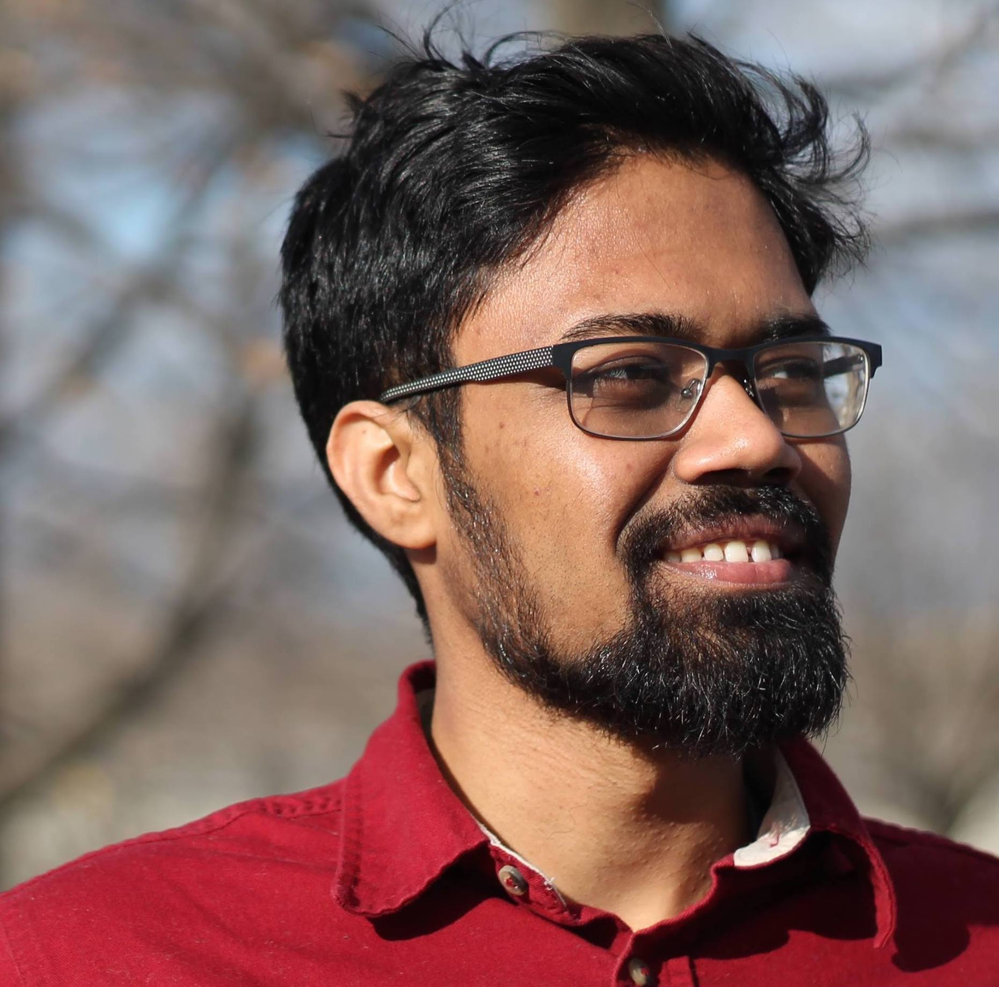

|
Faruk Ahmed
I'm a fifth-year PhD student studying deep learning with Aaron Courville
at Mila, Université dé Montréal.
My current research interests generally involve improving predictive behaviour for deep models under distributional shift. In the past, I've worked on
generative modelling (Masters thesis) and probabilistic graphical models.
I'm interested in full-time job opportunities in 2022. Here's my CV.
Email: faruk.ahmed@umontreal.ca
|

|
Systematic generalization with group-invariant predictions
Faruk Ahmed, Yoshua Bengio, Harm van Seijen, Aaron Courville. ICLR 2021 (Spotlight).
Integrating categorical semantics into unsupervised domain translation
Samuel Lavoie, Faruk Ahmed, Aaron Courville. ICLR 2021.
Detecting semantic anomalies
Faruk Ahmed, Aaron Courville. AAAI 2020 (Spotlight).
Probability distillation: A caveat and alternatives
Chin-Wei Huang*, Faruk Ahmed*, Kundan Kumar, Alexandre Lacoste, Aaron Courville. UAI 2019.
Improved training of Wasserstein GANs
Ishaan Gulrajani, Faruk Ahmed, Martín Arjovsky, Vincent Dumoulin, Aaron Courville. NeurIPS 2017.
PixelVAE: A latent variable model for natural images
Ishaan Gulrajani, Kundan Kumar, Faruk Ahmed, Adrien Ali Taiga, Francesco Visin, David Vázquez, Aaron Courville. ICLR 2017.
Reducing overfitting in deep networks by decorrelating representations
Michael Cogswell, Faruk Ahmed, Ross Girshick, Larry Zitnick, Dhruv Batra. ICLR 2016.
Optimizing expected intersection-over-union with candidate-constrained CRFs
Faruk Ahmed, Daniel Tarlow, Dhruv Batra. ICCV 2015.
|